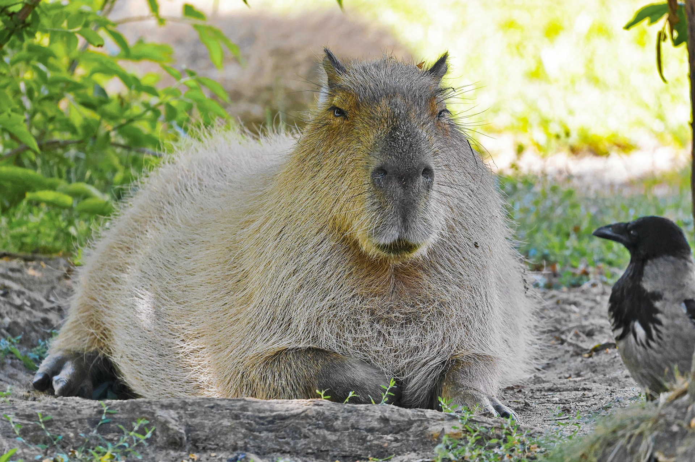
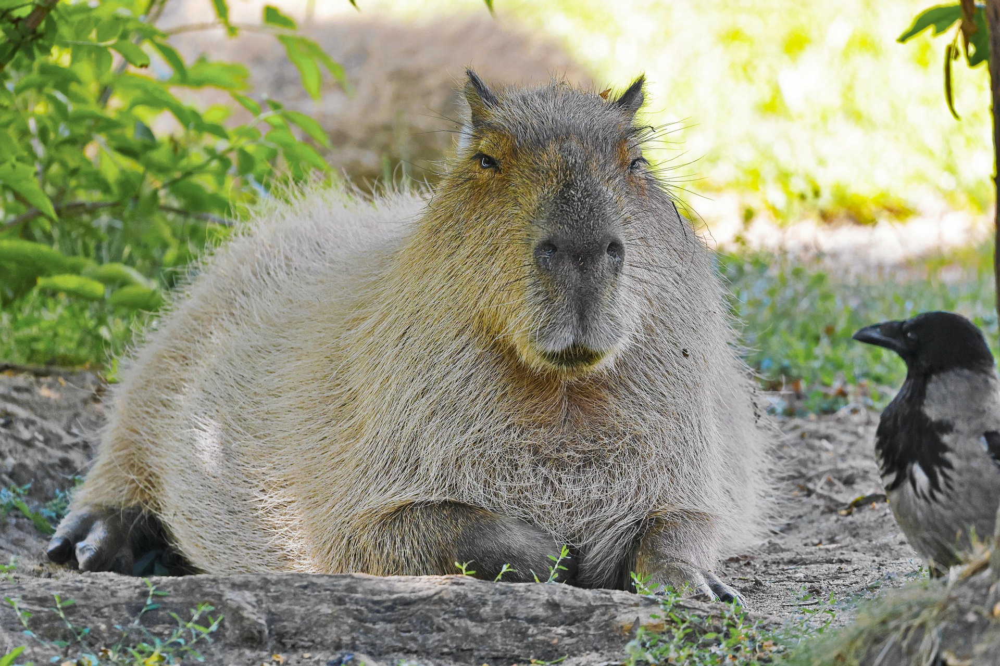

Em março de 2012 nascia a nossa ONG, ainda sem muita ideia de onde chegaria, nem de quantas capivaras teria a oportunidade de salvar, apenas com um – e mais forte – ideal: o de lutar incansavelmente pelos que pouco podiam fazer para mudar seus tristes destinos de abandono, maus tratos e crueldade...
Hoje, são mais de 2.000 finais felizes e milhares de sorrisos acumulados, de famílias que não faziam ideia do que estava por trás daquele focinho curioso que espiava com doçura, daquele corpinho rechonchudo que se acomodava com carinho no quintal, daquela carinha simpática e do maravilhoso caso de amor, generosidade, gratidão, companheirismo e fidelidade que começava naquela adoção — um recomeço digno para aquelas que um dia já sofreram muito com a indiferença dos humanos.
Mais gostoso do que termos a nobre missão de levar alegria para a casa das pessoas, é podermos fazer amigos com isso. E assim, nossa família do bem — composta por adotantes, voluntários, padrinhos e parceiros — não para de crescer! É sensacional ver e transformar novos embaixadores da nossa causa a cada dia, e lutamos muito para continuarmos merecedores da confiança e da colaboração de tantos amantes das capivaras com o nosso projeto!


 
